背景 : UNREAD是一款很棒的RSS阅读器, 免费版本有50条阅读的限制. 强化在非越狱机上的逆向之旅
因为是巩固逆向的知识阶段,踩坑是必然的, 但是多么绕的就不讲了, 但是要mark最后走对这个方式,后面也要逐渐总结对的方法
准备工作
UNREAD要求ios10以上才可以下载,所以我的935设备无法下载也无法砸壳, 所幸的是PP助手能搜到,不过版本低了0.2, 用起来没差别.
确认需求 : 去除阅读限制
分析
正向分析思路
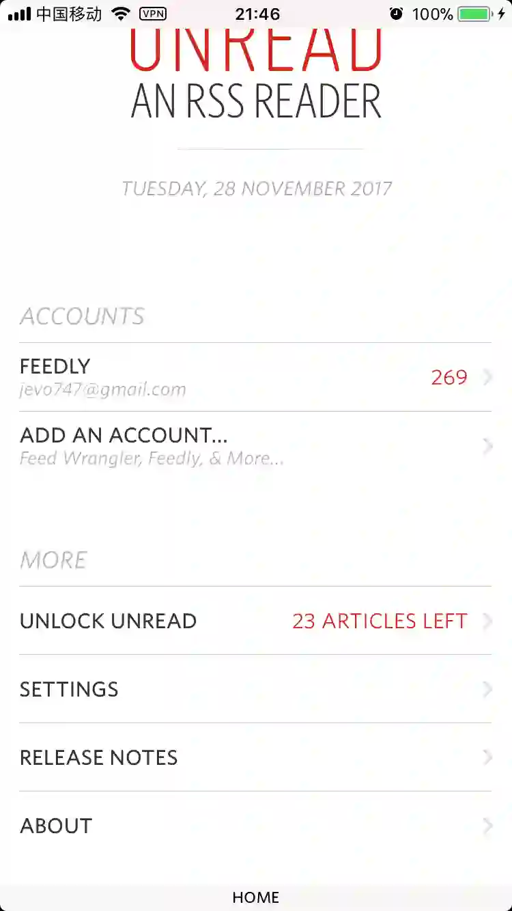
如果是我设计呢:
目标是个tableview , “UNLOCK UNREAD”这一cell显示了当前剩余可阅读的数量.每次点击进入文章阅读的时候,可读数量 -= 1; 有一个模型来记录这里的数量,
在tableview这个控制器,viewWillApear:的时候刷新row.
当时想的是:
那么如果是tableiview, dataSource方法必然有tableview:cellForRowAtIndexPath:被调用, 如果能找到模型,直接hook模型的调用或许是第一思路.但是熬到三点还没睡我才明白我踩坑了, 这里不累赘了,一把泪.
view层嵌入
从monkeyDev启动项目,拖入我们的APP后启动到设备上, 默认是会注入reveal动态库的, APP启动成功后, 进入到主页, 然后mac启动reveal:
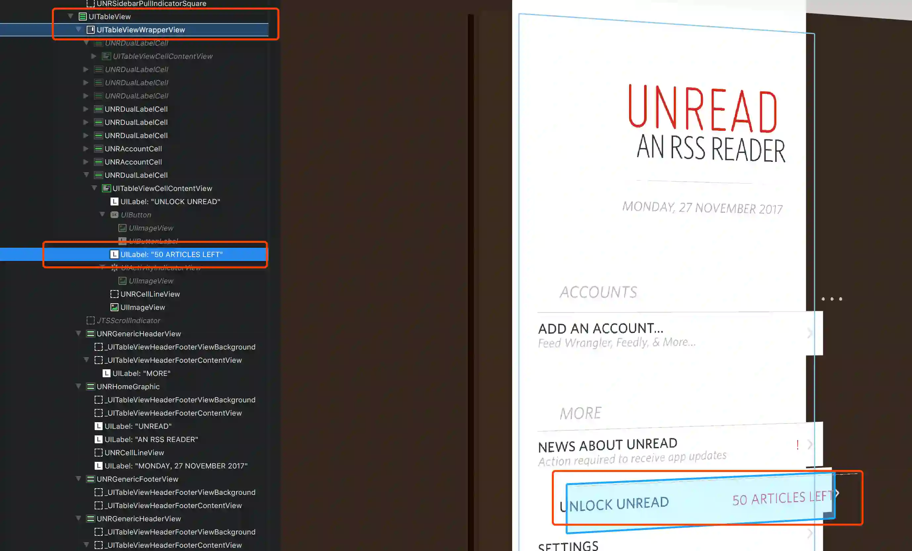
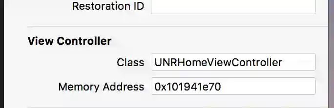
reveal启动后点到我们目标view,可以看到这是一个tableview的cell,”50 ARTICLES LEFT”是cellContentView的label, 查看右边, 我们能看到这个页面的控制器.
“NSRHomeViewController”
分析控制器
把class-dump出来的头文件拖到Xcode项目, 搜一下”NSRHomeViewController.h”可以看到这个头文件, 所幸头文件不多,我有了部分时间慢慢看这些方法,尝试发现敏感名称, 其中最让我敏感的是这个:
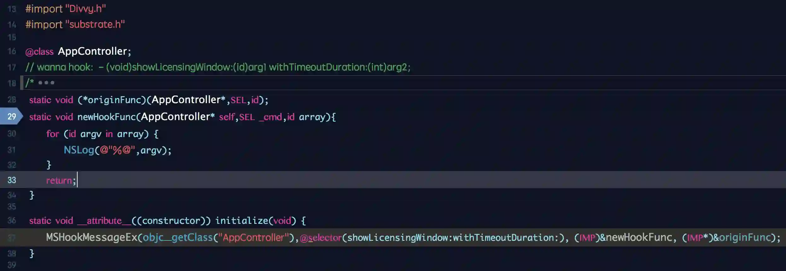
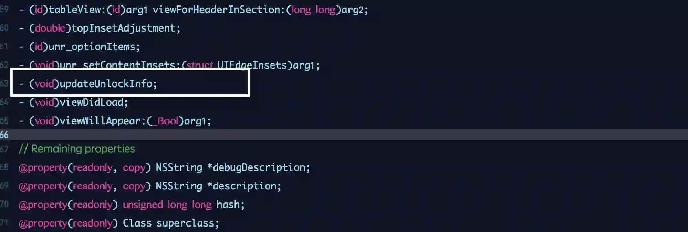
第二个方法这未免太明显~, 其它大概也预览了一下, 图一看到是NSArray, 或许会存储数据的模型.
断点可疑调用
二进制文件拉到Hopper反汇编后, 搜一下三个方法
moreItems & setMoreItems & updateUnlockInfo
获取它们的静态地址后,在LLDB查看下初始偏移地址, 加上并断点这三位.
分析的时候知道, 它是在点击文章阅读的时候才减一. 那么现在就进入文章里面,触发我们的断点. 果不其然它触发了,查看一下调用栈:
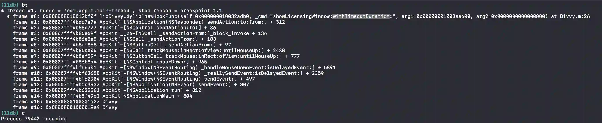
其中#0一定是我们当前被调用的方法, 那是谁呢?
嗯,就是updateUnlockInfo
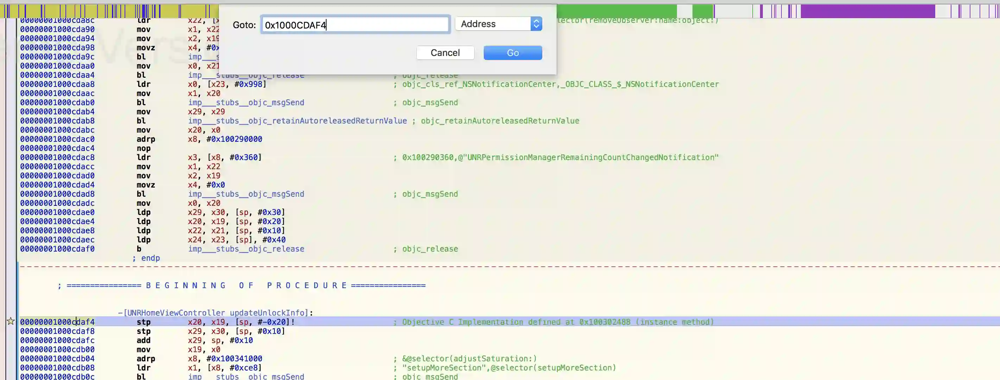
回溯上层的调用栈, 初步我们先查看下这些Unread模块的栈,看看是否我们调用的信息.分别减去初始偏移量后他们依次是:
1
2
3
4
\-\[UNRPermissionManager setRemainingCount:\]
\-\[UNRPermissionManager permissionToReadArticleWithUniqueID:\]
\-\[UNRArticlesListViewController showArticleViewer\]
\-\[UNRArticlesListViewController deadEndTapTimerFired:\]
逻辑梳理
hopper查看一下updateUnlockInfo的伪代码:
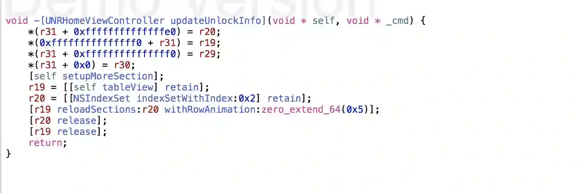
发现它只是负责调用reloadSection这个刷新动作,说明数据操作在上层
因此继而hopper查看一下
setRemainingCount: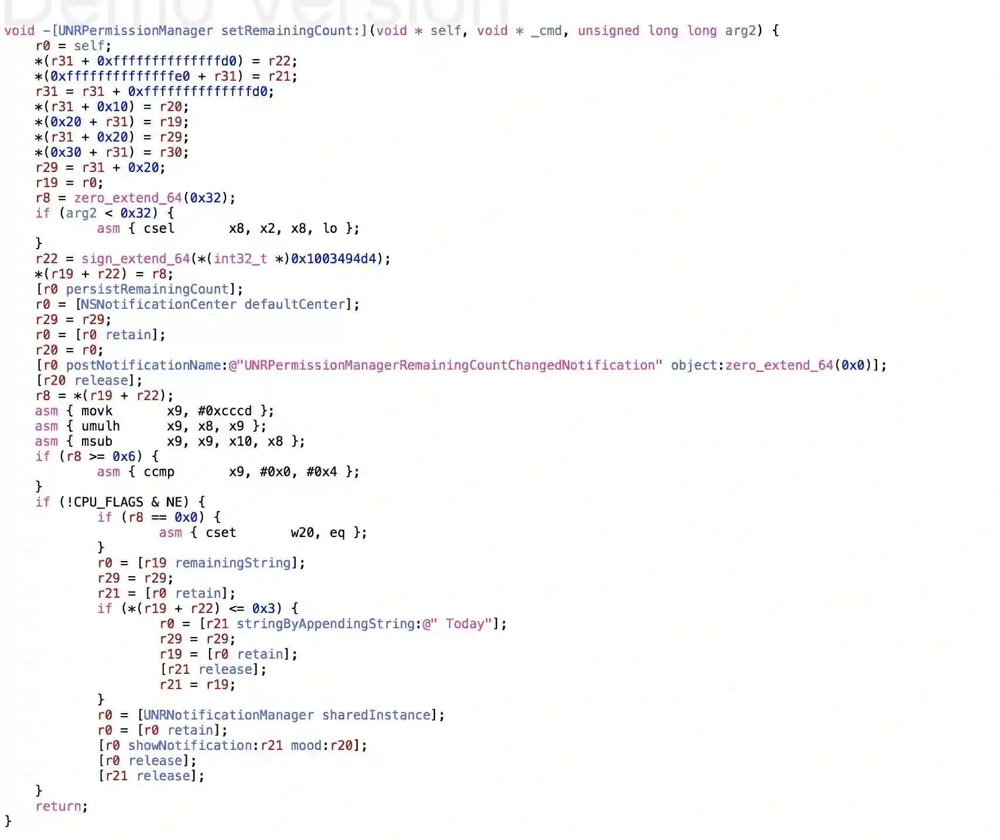
我们可以看到他的参数只有一个,而且是unsinged long long 类型, 猜测他是又负责调用传递的参数,而这个参数可能就是需要更新的数量.
那么线索就继续追溯到上层调用
permissionToReadArticleWithUniqueID, 从hopper找到并查看,翻开伪代码可以看到如下: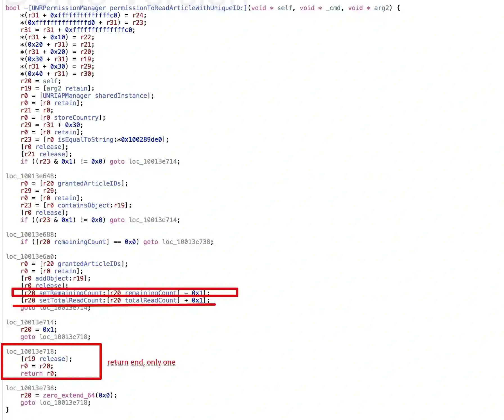
setRemainingCount:是这里调的, 而且发现UNREAD不仅记录未使用的次数,还记录了已使用的次数,如果过早的Hook
setRemainingCount:应该是起不了作用的.仔细观察这一代码段,发现这里只有一个return出口,且存在多个逻辑判断跳转分支,可以配合hopper的逻辑视图看到:
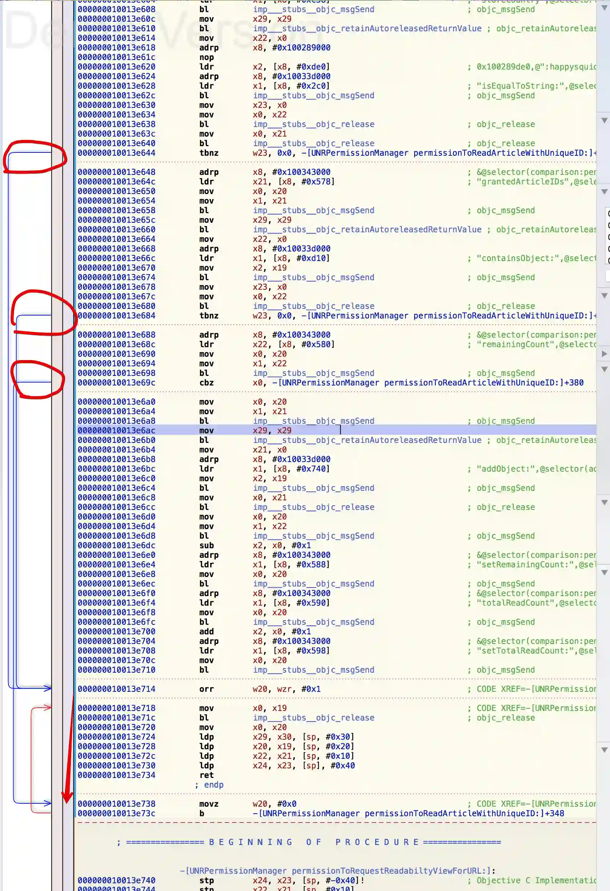
从伪代码结合汇编来看, 这里就是我们的目标了, 但我们怎么挑选这些分支呢? 个人觉得是三点:
1 首先我们知道我们要hook,大多时候是针对方法, 如果一个分支的逻辑是被某个特定的方法可以扭转的,基本上它就是我们想要的.
2 其次是对整个逻辑改动最小的, 不要影响其他的功能实现.
3 我们能比较稳妥确定的逻辑.猜可不能解决所有问题.
分析hook点
这里其实也是比较贪婪操作了, ?< 看图:
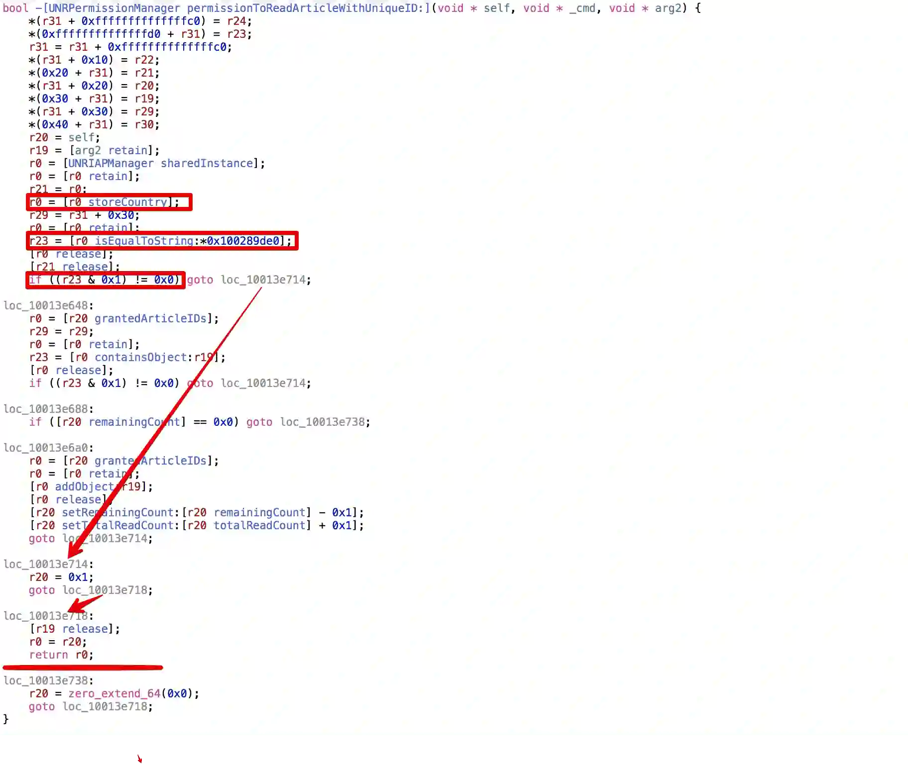
对比后发现第一个分支的逻辑比较清晰:
storeCountry返回了一个string类型, 与0x100289de0这个地址的值进行了比较, 如果相等则直接跳转到地址0x10013e714,并赋值为0x1即不为假的, 继而跳转到0x10013e718,返回真.从最简单的来看,这个方法绕开
remainingCount不会导致阅读文章的时候可阅读数量 -= 1. 其实到这里基本就能实现我们的功能了, 只要让storeCountry返回0x100289de0一样的字符串就可以了.so , 继续看看
storeCountry的返回逻辑,依旧常规Hopper搜方法: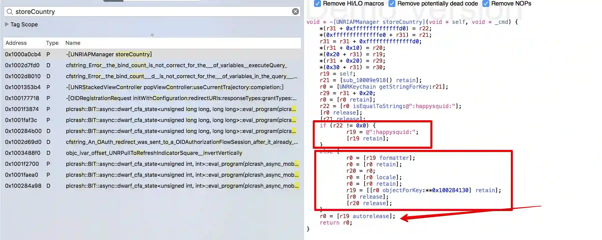
从UNRKeyChain获取的一个字符串,如果等于”:happysquid:”的话就返回”:happysquid:”,不然就返回这个
&0x100284130, 就这两种情况.
0x100289de0是一个静态地址,直接搜一下:
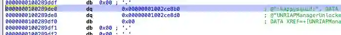
也是”:happysquid:”, 到这里基本就可以大胆试一试了.
hook代码
全部的Hook代码如下, copy执行即:
1
2
3
4
5
6
7
8
9
10
11
12
13
14
@interface UNRIAPManager
\- (NSString \*) storeCountry;
@end
CHDeclareClass(UNRIAPManager)
CHOptimizedMethod(0, self, NSString\*, UNRIAPManager,storeCountry){
NSLog(@"is hook succeed? -- -------------------");
return @":happysquid:";
}
CHConstructor{
CHLoadLateClass(UNRIAPManager);
CHClassHook(0, UNRIAPManager, storeCountry);
}
思路就是直接Hook
storeCountry,让其永远返回”:happysquid:”,这里似乎也是比较粗糙的做法(如何这里是后台动态下发呢? ),但换个思路想, 这里返回”:happysquid:”,逻辑的意思就是 “I’m the VIP” 的暗号,既然如此何乐不为. 碰碰运气跑一下看看. 这不就是逆向的随机性乐趣所在吗…
尝试就是收获,目前自用并未发现问题.几乎天天在这里APP里面看前辈文章的,稳的
看下执行效果:
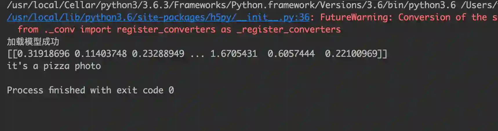
半意外收获,这里的提示语也没有了,所以说明我的猜测是对的.
其实hook代码的就这么几行, 但是逻辑的分析却耗了我一个熬到3点钟的晚上, 小小成就给自己泡一杯咖啡吧.
简单总结下
乐观的
1 成功的入口主要是updateUnlickInfo这个清晰可爱的方法和方法的调用栈, 我们可以通过调用栈来回溯层次调用逻辑,找到可以被hook的突破口.
2 实战才是领悟真谛的唯一途径. 通过本次实战, 逆向的思路更加清晰了, hopper一些反汇编工具调整好正确打开的姿势.
悲观的
1 本次逆向的时候比较长,大约耗费15个小时+(失去的还有很差的脸色),其中对于monkeyDev集成不太熟练,LLDB插件chisel是个可以提升点.
2 UNREAD如此明文的存储确实在安全的思路太过单纯了,或许在新版本已经修复了(这是从PP助手下载的1.6,新版本的是1.8的样子).
[逆向之旅NICE]
后面会谈谈如何加密敏感数据.